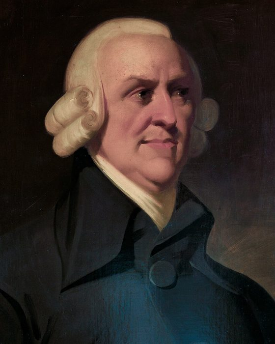

开读之前
斯密是谁，1776 年的英国什么样，他在跟谁吵架；你手上的杨译本该怎么用；250 年后的今天怎么读它；最后是全书地图和一条最短读法。
这本书和它的作者
《国富论》全名《国民财富的性质和原因的研究》，1776 年 3 月 9 日在伦敦出版，两卷大开本，定价 1 镑 16 先令。今年（2026 年）正好是它出版 250 周年。作者亚当·斯密（Adam Smith）当时 52 岁，是苏格兰的一位道德哲学教授，这本书他前后写了十来年。

斯密 1723 年生在苏格兰东岸的小港口柯科迪（Kirkcaldy），父亲在他出生前就去世了，他一生没有结婚，和母亲相伴到老。14 岁进格拉斯哥大学，17 岁拿奖学金去牛津读了六年，后来在书里挖苦牛津的教授多年不上课（页 25）。1751 年他回格拉斯哥大学当教授，先教逻辑，后教道德哲学；道德哲学在当时包括伦理、法律和后来叫经济学的东西。1759 年他出版了第一本书《道德情操论》，讲人怎样靠同情心形成道德判断，一举成名。
1764 年他辞去教职，陪年轻的巴克卢公爵去欧洲大陆游历，报酬是每年 300 镑，外加终身每年 300 镑的年金，这比教授的收入高得多。在日内瓦附近他拜访了伏尔泰，在巴黎结识了魁奈（Quesnay）等「重农学派」的经济学家（页 22）。1766 年回国后，他在家乡闭门写书，又在伦敦改了三年，1776 年终于出版。两年后他被任命为苏格兰的海关专员，住在爱丁堡，直到 1790 年去世。临终前他让朋友把大部分手稿烧掉了。
斯密生前，《国富论》出了五版。1784 年的第三版改动最大，加了一整章「重商主义体系的结论」（页 21）和几大段新内容，比如讲股份公司和东印度公司的部分（页 24）。本站讲到这些地方会说明「这是 1784 年加的」。本站用的英文是 Edwin Cannan 1904 年编的版本，底本是 1789 年的第五版，也就是斯密生前的最后一版。
1776 年的英国
这本书和美国《独立宣言》同一年问世。斯密写书时，北美十三个殖民地正在和英国闹翻；书里讲殖民地的那一章（页 20），他说英国为了一个「帝国的梦」花了太多钱，不如让殖民地自己独立，这在当时是很大胆的话。
1776 年也是瓦特的改良蒸汽机开始投入商业使用的年份。但书里几乎看不到工业革命：斯密见到的「工厂」，多是十来个人的手工作坊（页 01 的别针厂）；英国大多数人还在种地，最大的公司是东印度公司，它在印度不只做生意，还收税、养兵、打仗。斯密骂得最多的，也正是这种拿到国家特权的大商人。
那时的英国和欧洲各国奉行一套后来叫「重商主义」的政策：国家要富，就要多卖少买，把金银攒在国内；为此要限制进口、奖励出口、垄断殖民地的贸易。《国富论》的一大半，就是在拆这套政策。
他在跟谁吵架
- 和重商主义吵。斯密说财富不是金银，而是一国人民每年能用上的东西；限制贸易只是让一小群商人和制造业者得利，全国的消费者付账。卷四专门讲这件事（页 16、17、21）。
- 和行会、特权、垄断吵。学徒法、行会章程、定居法、专营公司，都是用法律替一部分人挡住竞争（页 08、20、24）。他警惕的是拿到特权的人，不管他是商人、地主还是政府官员。
- 也和「穷人要穷才肯干活」的老观念吵。他说大多数人过得好，社会才算繁荣（页 05）；分工让工人变得单调愚钝，国家应当办教育来补救（页 25）。
斯密常被拿来当「自由放任」「市场万能」「贪婪是好事」的代言人，这三样书里都站不住。「看不见的手」全书只出现一次（页 17），说的是商人宁愿把钱投在本国。
250 年后怎么读它
这是一本 18 世纪的书。里面有今天仍是经济学常识的洞见（分工、市场范围、自由进出、补偿性工资差异、贸易让双方都得利），也有被后来的经济学推翻或改写的部分（劳动价值论、生产性劳动的划分、利润率必然下降、人口跟着工资涨落），还有只对他那个时代成立的观察（殖民地、行会、18 世纪的税制）。
所以本站每一页都不只讲斯密说了什么，还要说今天怎么看。斯密的每条论点旁边都有一个标签：
- 成立今天的经济学和证据支持这句话。
- 部分成立大方向对，细节或适用范围要改。
- 过时说的是 18 世纪的世界，当时也许对，今天的制度和技术已经变了。
- 被推翻后来的经济学或证据说明它错了。
- 有争议经济学界至今没有定论，两边各有代表性的研究。
页面上半部分有时会有一个红框「别被带歪」，提醒你这一页里哪个观点今天看来有问题，读的时候先带着警惕。
你手上的杨译本
- 译本整体忠实可靠。杨敬年是南开大学的经济学家，九十岁时译完这本书。译本是全译，还带着英国格拉斯哥版的编者注、每章前面的「导读」（多引熊彼特《经济分析史》的「读者指南」）和书后的索引。
- 正文里混着的小标题，是英文版页边小结的译文，不是斯密写的标题。本站的分节地图就用它们指路：「杨译里找」后面就是那一节开头附近的小标题，在电子书里搜它就能跳过去。电子版里有些小标题排错了位置，这时本站给的是那一节第一句开头的几个字。
- 本站不写页码，只按小标题和内容指路。
- 会把人读歪的译法，各页「译本勘误」里都列了，汇总在译本勘误页。最常见的是 18 世纪的词按今天的意思译错了：police 是公共管理、政策，杨译多处译成「警察」；projector 是搞新计划的人，杨译作「投机商」。措辞别扭但意思对的不收。
- 电子版有扫描错字，比如「收入」成了「收人」、「购入」成了「购人」、重量的「磅」成了「英磅」，不是译者的错，读到时心里改过来就好。
18 世纪的钱和度量
| 书里 | 是什么 |
|---|---|
| pound（£）、shilling（s.）、penny（d.） | 英镑、先令、便士。1 镑 = 20 先令 = 240 便士。英镑原来真是一磅银子，到斯密的时代只剩三分之一左右（页 02） |
| guinea | 几尼，一种金币，1717 年起定为 21 先令 |
| farthing | 法新，四分之一便士 |
| quarter、bushel | 夸特、蒲式耳，量谷物的容积单位，1 夸特 = 8 蒲式耳。书里的谷价多按「每夸特多少先令」算 |
| Scots money | 苏格兰镑，1707 年两国合并时折合 1/12 英镑。斯密说起苏格兰的旧账时用它 |
18 世纪的 1 镑折合今天多少钱，答案差别很大：按物价、按工资、按经济规模算，能差十几倍。本站尽量不折算，而是拿同时代的东西比，比如一个劳工一天挣多少（页 07 有一张图），或者斯密做教授时一年的收入。
全书地图
全书五卷三十二章，本站分成 28 页。核心页（9 页）是「先读」的几章，讲透；轻量页（19 页）讲个大概：他想证明什么、今天怎么看、哪段值得一看、哪些可以放心跳过。
| 卷 | 讲什么 | 核心页 |
|---|---|---|
| 全书引言、卷一 | 财富是什么；分工；钱；价格；工资、利润、地租 | 01 分工、04 价格、05 工资、07 各行工资的差别、08 行会和学徒 |
| 卷二 | 资本怎样积累、怎样使用；钱和银行 | （都是轻量页） |
| 卷三 | 罗马以后欧洲的经济史；城市怎样瓦解了封建领主 | （都是轻量页） |
| 卷四 | 驳重商主义，评重农学派 | 16 财富不是金银、17 看不见的手、21 消费是生产的目的 |
| 卷五 | 政府该做什么、钱从哪来：国防、司法、公共工程、教育、赋税、公债 | 25 教育 |
每一节还分三档：先读（门外汉最该读的）、有空（好看或有启发，不读也不影响主线）、可跳过（18 世纪的细节、统计、已过时的技术讨论）。斯密自己在卷一第 4 章末尾就向读者道过歉，说下面几章「也许有些地方显得没必要地啰嗦」。
最短读法
只读全书标了「先读」的节，按书里的顺序排在下面，每节写着在杨译里从哪里读起、大约多少字。读过的节，在各页的分节地图里打了勾，这里也会显示出来。
每一页怎么用
读之前，花五分钟看页面上半部分：这几章在全书的哪里，斯密想证明什么，他怎么一步步推；「别被带歪」的红框先看。
读的时候，对着分节地图找到杨译里的位置。概念不懂看「先用中文过一遍」，人和事没听说过看「故事和背景」，想读斯密的原话看「原典」：那里有英文原文和本站的白话译。
读完以后，看「读完：斯密到底说了什么」「对照今天」和「本站怎么看」，再做「检查一下理解」，写下一句话。隔几周回来时，打开全书回顾。